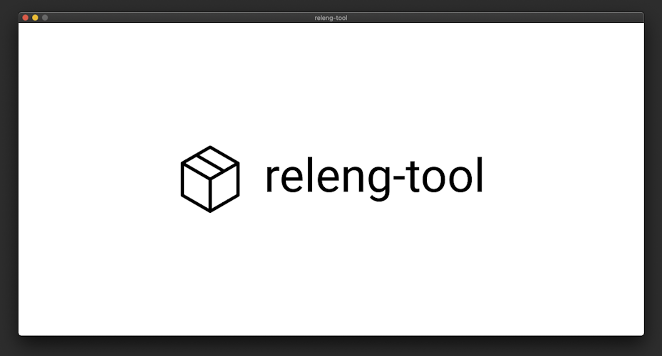
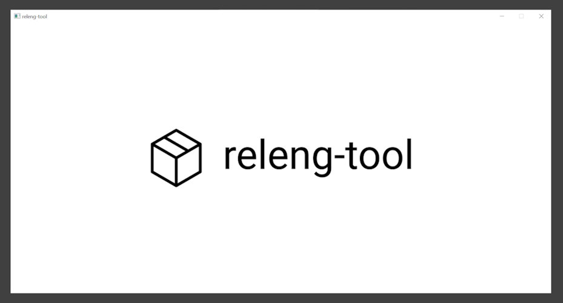
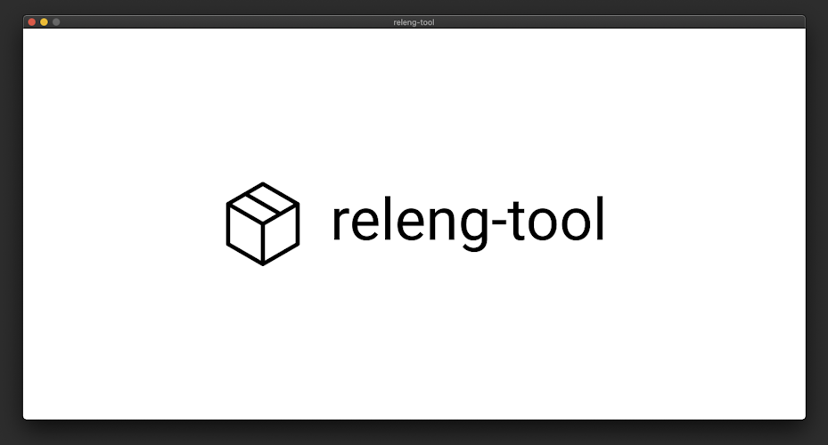
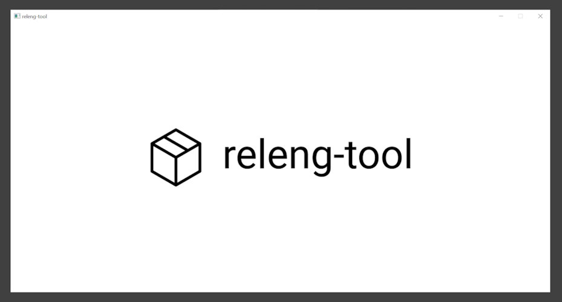

Tutorial "An SDL example"¶
备注
The goal of this tutorial is to show an example of C-based project, which is built using a host's pre-installed tools (compilers, etc.). The sample application created will be run on the host system to show the results of a build. Typically, a project would configure/use toolchains to build projects to ensure the resulting files can run on a desired target.
This tutorial shows an example using creating a Simple DirectMedia Layer (SDL) sample project, utilizing CMake, which can be built on various platforms (Linux, OS X or Windows). Users of this tutorial can use any platform they desire (commands may vary).
Preparing¶
To start, make a new folder for the project, folders for each package and move into the root folder:
$ mkdir -p my-sdl-project/package/libsdl
$ mkdir -p my-sdl-project/package/sample
$ cd my-sdl-project/
The "libsdl" package will be used to manage the use of SDL, and the "sample" package will be a representation of our sample application that uses the SDL library.
The libsdl package¶
Inside the libsdl package, create a package definition
my-project/libsdl/libsdl with the following contents:
LIBSDL_LICENSE = ['Zlib']
LIBSDL_LICENSE_FILES = ['LICENSE.txt']
LIBSDL_SITE = 'https://www.libsdl.org/release/SDL2-${LIBSDL_VERSION}.tar.gz'
LIBSDL_TYPE = 'cmake'
LIBSDL_VERSION = '2.28.0'
LIBSDL_CONF_DEFS = {
'SDL_SHARED': 'ON',
'SDL_STATIC': 'OFF',
'SDL_TEST': 'OFF',
}
The SDL library uses a zlib license. We configure
LIBSDL_LICENSEto the equivalent SPDX license identifier, as well as defineLIBSDL_LICENSE_FILESto point to a copy of the license text. Specifying license information is not required, but can be helpful when generating license data or software bill of materials (SBOM) for a project.This example uses SDL v2.28, which we set in the
LIBSDL_VERSIONoption. The version value is useful for managing output folders and logging versions of packages.We specify the location to download sources in
LIBSDL_SITE. We take advantage of theLIBSDL_VERSIONconfiguration to point to the specific version we desire.The SDL library uses CMake. This means we can use
LIBSDL_TYPEto configure the helper type and avoid the need to create configure/build scripts to run CMake for us (since releng-tool will handle this for us).This package has a series of custom options available in its library. We use
LIBSDL_CONF_DEFSto configure various CMake options, for example, disabling unit tests. Configuration options will vary per package.
The above libsdl package specifies a remote URL to download library
sources. These sources should be validated to ensure data is not corrupted
or manipulated. To do this, create a hash file alongside the package
definition called libsdl.hash with the contents:
# gpg verified SDL2-2.28.0.tar.gz.sig | 1528635D8053A57F77D1E08630A59377A7763BE6
sha256 d215ae4541e69d628953711496cd7b0e8b8d5c8d811d5b0f98fdc7fd1422998a libsdl-2.28.0.tar.gz
# locally computed
sha256 9928507f684c1965d07f2b6ef4b4723d5efc2f6b4ab731f743a413c51c319927 LICENSE.txt
In this hash file, expected hashes for resources can be configured and checked
when releng-tool attempts to fetch resources from remote sources. Ideally,
hashes provided from a third-party package release can be directly added into
these files (<hash-type> <hash> <file>). In this example, SDL provides
GPG signatures of their archives. We manually download the archive and
signature file to verify its contents. Once verified, we generated our own
SHA-256 sum and place it into this hash file (with a helpful comment).
In addition, we also provide a hash of the license document. While not required, this can be useful in detecting if the license of a package changes between versions.
Finally, the following shows an example of a patch scenario. For v2.28 SDL's
CMake projects, the library's implementation has trouble when the
installation prefix is empty (which releng-tool may set in Windows
environments). To help fix the CMake definition, we want to patch it before
running a configuration script. Along side the package definition, create
a patch
001-empty-prefix-support.patch
with the following contents:
diff -u a/CMakeLists.txt b/CMakeLists.txt
CMAKE_INSTALL_PREFIX may be empty, causing the set of bin_prefix_relpath
to fail. To avoid a failure, avoid using CMAKE_INSTALL_PREFIX when empty.
--- a/CMakeLists.txt 2023-06-20 14:27:57.000000000 -0400
+++ b/CMakeLists.txt 2023-06-25 17:41:30.823627100 -0400
@@ -3067,7 +3067,11 @@
endif()
set(prefix ${CMAKE_INSTALL_PREFIX})
-file(RELATIVE_PATH bin_prefix_relpath "${CMAKE_INSTALL_FULL_BINDIR}" "${CMAKE_INSTALL_PREFIX}")
+if(CMAKE_INSTALL_PREFIX STREQUAL "")
+ set(bin_prefix_relpath ${CMAKE_INSTALL_FULL_BINDIR})
+else()
+ file(RELATIVE_PATH bin_prefix_relpath "${CMAKE_INSTALL_FULL_BINDIR}" "${CMAKE_INSTALL_PREFIX}")
+endif()
set(exec_prefix "\${prefix}")
set(libdir "\${exec_prefix}/${CMAKE_INSTALL_LIBDIR}")
Without getting into the specifics of the patch, the existence of this
patch file will ensure the extracted CMakeLists.txt is updated before
libsdl package performs its configuration stage. This should ensure this
third-party library can be built on all the platforms we wish to support.
The following shows the expected file structure at this stage of this tutorial:
└── my-sdl-project/
└── package/
├── libsdl/
│ ├── 001-empty-prefix-support.patch
│ ├── libsdl
│ └── libsdl.hash
└── sample/
The sample package¶
Next, we will create a "sample" project. The sources for this sample
project would typically be stored in a version control system such as a
Git repository. To simplify this tutorial, we will utilize a local VCS
type (typically used for interim development) to help demonstrate the
sample project.
Create a package definition my-sdl-project/sample/sample with the
following contents:
SAMPLE_DEPENDENCIES = [
'libsdl',
]
SAMPLE_INTERNAL = True
SAMPLE_TYPE = 'cmake'
SAMPLE_VCS_TYPE = 'local'
We specify a dependency on the
libsdlpackage by adding this package in aSAMPLE_DEPENDENCIESlist. One or more packages can be specified here if needed, and will ensure thatlibsdlis built before any attempts to configure/build the sample package.This package is then flagged as internal (
SAMPLE_INTERNAL). We do this since this is our own custom package and flagging an internal package avoids warnings generated for missing license files or hash files (although developers can add hash checks for internal sources if desired).The sample program will also be a CMake-based project, so
SAMPLE_TYPEwill be configured.Lastly, we wil configure the custom
localtype inSAMPLE_VCS_TYPEto indicate our implementation will be found inside the package folder (until we can later add it to Git/etc. repository in the future).
Next, we want to create the sample implementation for this demonstration.
Inside the sample package folder, create the following file structure:
└── local/
├── src/
│ └── sample/
│ └── main.c
└── CMakeLists.txt
With the following contents:
cmake_minimum_required(VERSION 3.11)
set(BASE_DIR ${CMAKE_CURRENT_SOURCE_DIR})
set(INC_DIR ${BASE_DIR}/src)
set(SRC_DIR ${BASE_DIR}/src/sample)
########################################################################
## support
########################################################################
# targeting c11
set(CMAKE_C_STANDARD 11)
enable_language(C) # msvc hint
# includes
include_directories(${INC_DIR})
set(CMAKE_MACOSX_RPATH 1)
set(CMAKE_INSTALL_RPATH "${CMAKE_INSTALL_PREFIX}/lib")
########################################################################
## dependencies
########################################################################
find_package(SDL2 REQUIRED)
find_package(Threads REQUIRED)
########################################################################
## project
########################################################################
project(sample)
set(SAMPLE_SRCS
${SRC_DIR}/main.c
)
add_executable(sample ${SAMPLE_SRCS})
target_link_libraries(sample SDL2::SDL2 SDL2::SDL2main)
target_link_libraries(sample Threads::Threads)
install (TARGETS sample RUNTIME DESTINATION bin)
#include <SDL2/SDL.h>
#include <stdbool.h>
#include <stdio.h>
static void err(const char *format, ...)
{
fprintf(stderr, "(error) ");
va_list args;
va_start(args, format);
vfprintf(stderr, format, args);
va_end(args);
fprintf(stderr, "\n");
fflush(stderr);
}
int main(void)
{
SDL_Renderer* renderer;
SDL_Surface* imgSurface;
SDL_Texture* imgTexture;
SDL_Window* window;
if (SDL_Init(SDL_INIT_VIDEO | SDL_INIT_EVENTS) < 0) {
err("sdl2 init: %s", SDL_GetError());
return 1;
}
window = SDL_CreateWindow("releng-tool",
SDL_WINDOWPOS_CENTERED, SDL_WINDOWPOS_CENTERED,
1280, 640, SDL_WINDOW_OPENGL);
if (window == NULL) {
err("failed to create window");
return 1;
}
renderer = SDL_CreateRenderer(window, -1, SDL_RENDERER_ACCELERATED);
if (renderer == NULL) {
err("failed to create renderer");
return 1;
}
// read the image into a texture
imgSurface = SDL_LoadBMP("releng-tool.bmp");
if (imgSurface == NULL) {
err("failed to load image: %s", SDL_GetError());
return 1;
}
imgTexture = SDL_CreateTextureFromSurface(renderer, imgSurface);
if (imgTexture == NULL) {
err("failed to create texture");
return 1;
}
SDL_FreeSurface(imgSurface);
while (true) {
// wait until a quit is issued
SDL_Event e;
if (SDL_PollEvent(&e)) {
if (e.type == SDL_QUIT) break;
}
// render the image
SDL_RenderClear(renderer);
SDL_RenderCopy(renderer, imgTexture, NULL, NULL);
SDL_RenderPresent(renderer);
}
// cleanup
SDL_DestroyTexture(imgTexture);
SDL_DestroyRenderer(renderer);
SDL_DestroyWindow(window);
SDL_Quit();
return 0;
}
Without getting into specifics of this sample program, the overall goal is to have an SDL program create a window and show an image.
The following shows the expected file structure at this stage of this tutorial:
└── my-sdl-project/
└── package/
├── libsdl/
│ ├── 001-empty-prefix-support.patch
│ ├── libsdl
│ └── libsdl.hash
└── sample/
├── local/
│ ├── src/
│ │ └── sample/
│ │ └── main.c
│ └── CMakeLists.txt
└── sample
Project configuration and post-build script¶
The project has both libsdl and sample packages ready to build. For
the sample project, the implementation references a releng-tool.bmp
image to render for a window, which has not been setup. This file should
be added into the build system and installed into the target in the
post-build stages.
Create a new assets folder at the root of the project folder. Inside,
place a copy of the releng-tool.bmp image.
At the root of the project folder, create a post-build script named
releng-post-build with the following contents:
{kind=link}
assets_dir = releng_join(ROOT_DIR, 'assets')
sample_img = releng_join(assets_dir, 'releng-tool.bmp')
releng_copy_into(sample_img, TARGET_BIN_DIR)
In this example script, we find the project's root path using a
ROOT_DIRhelper to find where we locally store thereleng-tool.bmpimage file.We then copy the image into the target directory's bin folder to be placed alongside the executable we plan to build.
Lastly, we need to create our releng-tool configuration file for the project.
In the root folder, create a releng file with the following contents:
packages = [
'sample',
]
We explicitly configure releng-tool to load the
samplepackage to build.Note that we do not need to specify the
libsdlpackage since thesamplepackage will load it implicitly through its dependency configuration.
The following shows the expected file structure at this stage of this tutorial:
└── my-sdl-project/
├── assets/
│ └── releng-tool.bmp
├── package/
│ ├── libsdl/
│ │ ├── 001-empty-prefix-support.patch
│ │ ├── libsdl
│ │ └── libsdl.hash
│ └── sample/
│ ├── local/
│ │ ├── src/
│ │ │ └── sample/
│ │ │ └── main.c
│ │ └── CMakeLists.txt
│ └── sample
├── releng
└── releng-post-build
Performing a build¶
备注
Users will want to run a build in a shell which has the host tools needed
to perform a build (e.g. the compiler). For Windows, this may be invoking
releng-tool in a Visual Studio command prompt on a system with patch
installed. For example:
Start Git SCM Bash shell.
Load Visual Studio support into the shell (for example, when using VS2019):
C:\Program Files (x86)\Microsoft Visual Studio\2019\Community\Common7\Tools\VsDevCmd.batNavigate to the project directory.
Invoke
releng-tool.
With packages, assets and configurations prepared, the project should be
ready to be built. While in the my-sdl-project folder, invoke
releng-tool:
$ releng-tool
fetching libsdl...
requesting: https://www.libsdl.org/release/SDL2-2.28.0.tar.gz
[100%] libsdl-2.28.0.tar.gz: 7.7 MiB of 7.7 MiB
completed download (7.7 MiB)
extracting libsdl...
WhatsNew.txt
Xcode
android-project
VisualC-WinRT
...
patching libsdl...
(001-empty-prefix-support.patch)
patching file CMakeLists.txt
configuring libsdl...
building libsdl...
installing libsdl...
configuring sample...
building sample...
installing sample...
generating sbom information...
generating license information...
(success) completed (0:01:15)
Testing¶
With the project built, we will run the recently created SDL application to verify our initial releng-tool project definitions. With Linux or OS X, navigate to the target directory's bin path and invoke the created sample application:
$ output/target/usr/bin
$ LD_LIBRARY_PATH=../lib ./sample
With Windows, users can navigate to output/target/bin using the file
explorer and click-open the sample.exe executable.
In all cases, a window should be presented with the releng-tool logo:
 



This concludes this tutorial.